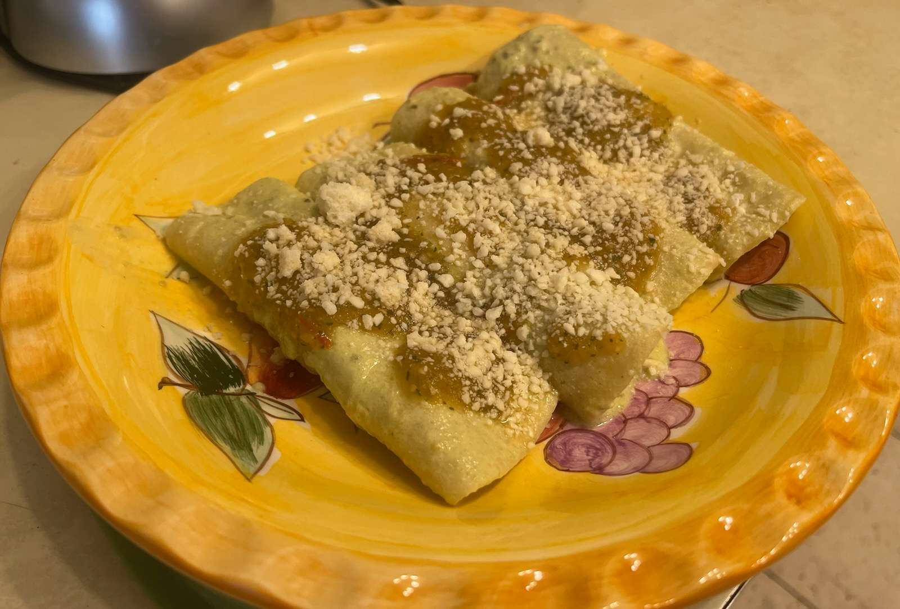

Enchiladas Verdes

Enchiladas with Serrano Pepper Salsa
Enchiladas Recipe by Letty
Ingredients
- ~28 Tomatillos (peeled, light green color)
- 2 Chicken Breasts, pre-cooked (rotisserie)
- 2 Tomatoes (large)
- 2 Pasilla Peppers (stem up= less spicy, stem down = spicy)
- 2 Serrano Peppers (large)
- 1 Cup Sour Cream (not salted)
- 1 + 1/2 tbsp Salt
- 1/2 Head of Cabbage
- 1/2 White Onion
- 2 Cloves of Garlic
- 2 Small Handfuls Cilantro
- Soft Tortillas
- Corn Oil
- Cotija Cheese (or Queso Ranchero) (Grated)
Steps
- Cut off top of Pasilla Peppers and deseed them. Cut into 1/4ths lengthwise.
- Place Pasillas into a pot with all of the Tomatillos (dehusked). Completely cover with water and set to boil.
- In a separate pot, completely cover whole Tomatoes and Serrano Peppers with water and set to boil.
- Boil both pots until Tomatoes and Tomatillos are soft but not disintegrating.
- While boiling, hand shred the Chicken and cut the Cabbage into small, thin slices.
Salsa de Crema
- Using a strainer, scoop all Pasillas and half of the Tomatillos into a blender. Avoid excessive water transfer.
- Add Sour Cream to blender.
- Blend ingredients and add Sour Cream as needed until mix is a light avocado cream color. Pour into a large container
- Add 1 tbsp Salt to the mix and stir. Optionally add more to taste.
Salsa de Serrano
- Using a strainer, scoop the rest of the Tomatillos, the Tomatoes and Serranos into a blender. Avoid excessive water transfer.
- Add Garlic, Onion, and Cilantro to Blender
- Blend until smooth, pour into a separate large container, and add 1/2 tbsp Salt. Optionally add more to taste.
Putting it all Together
- In a small pan, add enough corn oil to completely submerge a tortilla. Heat oil.
- Dip a Tortilla into hot oil, both sides. Enough to heat up, but not enough to harden.
- After each full dip, press Tortillas into paper towels to drain oil. Repeat for as many enchiladas as you will be eating
- After all Tortillas are oiled, for each:
- Dip into the Salsa de Crema until fully saturated.
- Add Shredded Chicken and wrap Tortilla
- Sprinkle Cheese.
- Spoon out Salsa de Serrano on top.
- Sprinkle Cabbage Slices.
- Serve all together on plate.